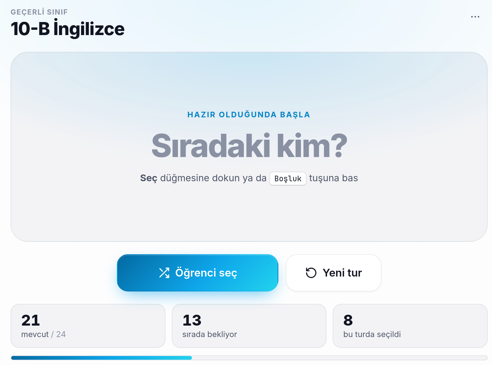
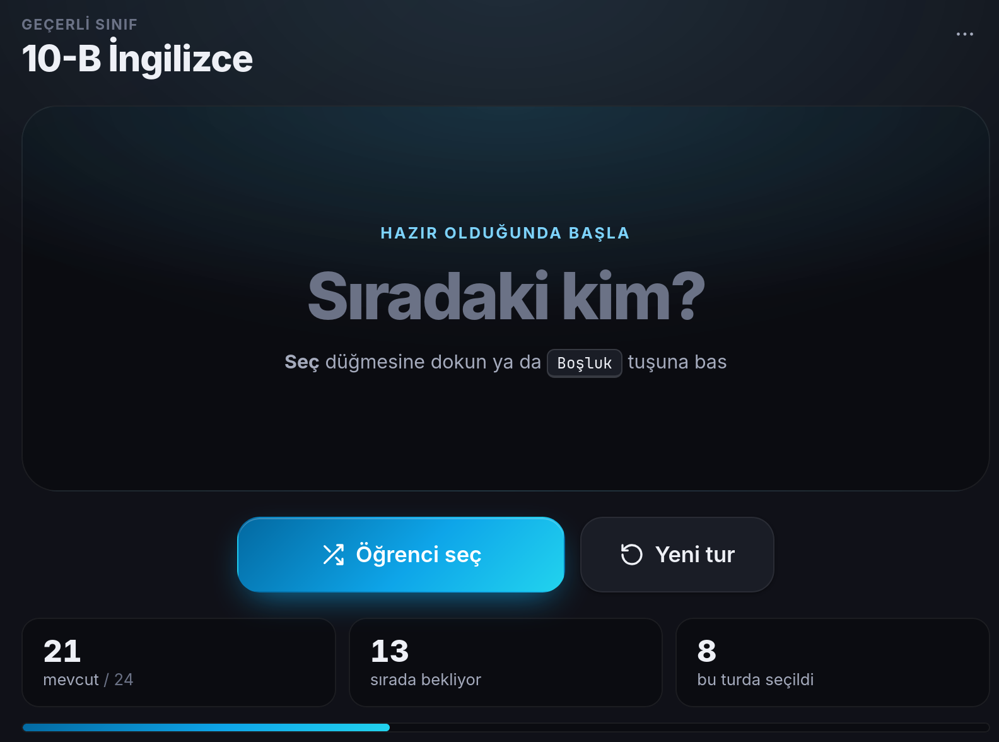
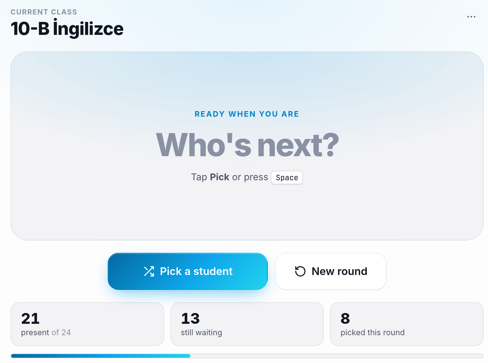
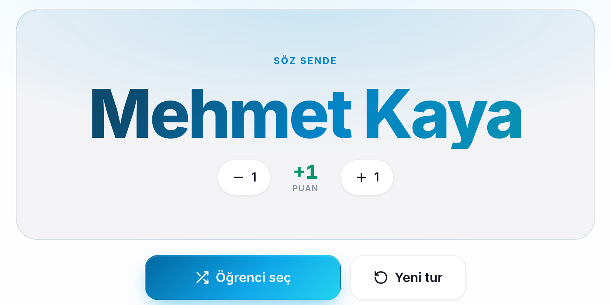
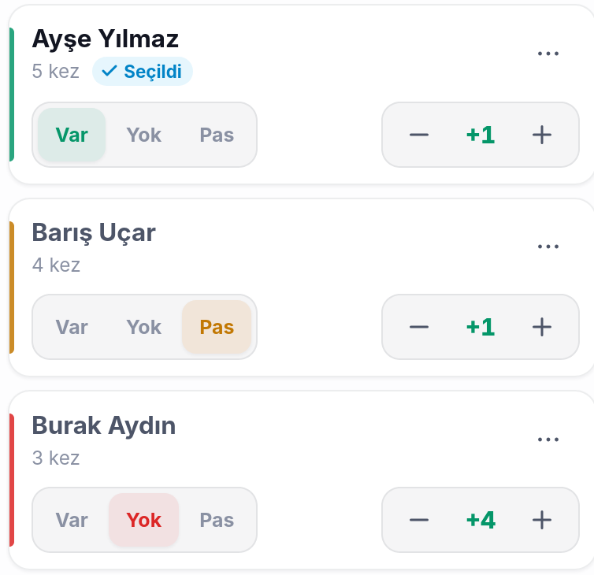
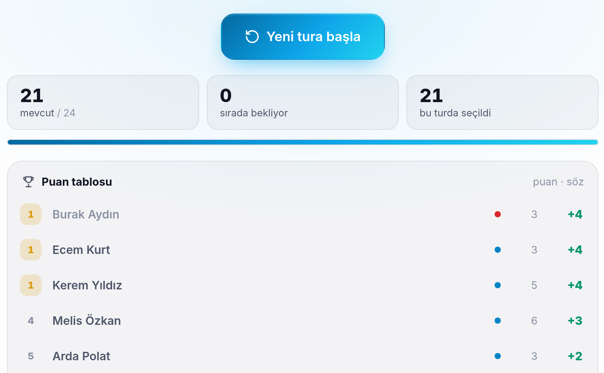

Öğrenci Seçici
Herkese
eşit söz
Sınıfta söz hakkını adil dağıtan seçici
Buğra Çalışkandinç · Milli Eğitim Akademisi Aday Öğretmeni
Neden?
Tanıdık bir sahne
Hep aynı eller kalkıyor.
Neden?
Araştırmalar ne diyor?
Söz isteyen hep aynı grup
Aguillon ve ark., 2020
Kaygı başarıyı düşürür
Botes ve ark., 2020
Söz vermek gönüllüleri artırır
%55 → %77
Dallimore ve ark., 2013
Dil dersinde
Söz hakkı, konuşma pratiği demek.
Parmak kaldırmayan, pratiği de kaçırır.
Uygulamanın tek kuralı
Herkes söz almadan, kimse ikinci kez seçilmez.
Sıra rastgele, söz hakkı eşit.
Nasıl çalışır?
Bir tur, beş adım
Sınıf listesi
Yoklama
Seçim havuzu
Rastgele seçim
Yeni tur

Uygulamadan
Seçim ekranı
Tek büyük düğme: dokunun ya da Boşluk’a basın.

Uygulamadan
Koyu tema da var
Karartılmış sınıfta göz yormaz.

Uygulamadan
“It also comes in English!”
Arayüz her derste ek bir İngilizce girdi olur.

Uygulamadan
Söz sende
İsim arka sıradan da okunur.

Uygulamadan
Yoklama ve tur
Yok ya da Pas olan öğrenci seçilmez.

Uygulamadan
Tur bitti
Yeni tur tek dokunuşla başlar.
Nasıl yapıldı?
Sınıfın ihtiyacından doğdu
Eylül 2025’ten beri kendi derslerimde gelişiyor.
İnternetsiz
Veri tahtada kalır
Pardus’a hazır
Türkçe / İngilizce
Ne kadar fark eder?
30 öğrenci, 15 ders, 90 söz hakkı
Adil dağılımda herkes 3 kez söz alır.
Parmak kaldırma
Öğretmenin seçimi
İsim çarkı
Öğrenci Seçici
Sonuçlar
Bir ayda söz hakkı nasıl dağıldı?
Kısa çubuk daha adil.
Ayda en fazla 1 kez konuşan
En çok seçilen öğrenci kaç kez? (adil: 3)
Rastgele olmak, adil olmak demek değil
11/30
İsim çarkıyla 30 soruda hiç seçilmeyen
0/30
Öğrenci Seçici ile hiç seçilmeyen
Sınıfta kullanım
Kaygıyı artırmadan söz vermek
Önce soru, sonra isim
Düşünme süresi
Önce ikili prova
Çabayı ödüllendirin
Her branş, her akıllı tahta
Pardus’ta üç kurulum yolu
Paketle
.deb dosyası
Şifresiz
tek satır
Kurulumsuz
tarayıcıda aç
Teşekkürler
Uygulama ve kılavuz:
github.com/bugracdnc/student-picker
Kaynaklar
Aguillon, S. M., Siegmund, G.-F., Petipas, R. H., Drake, A. G., Cotner, S. ve Ballen, C. J. (2020). Gender differences in student participation in an active-learning classroom. CBE—Life Sciences Education, 19(2), ar12. https://doi.org/10.1187/cbe.19-03-0048
Botes, E., Dewaele, J.-M. ve Greiff, S. (2020). The Foreign Language Classroom Anxiety Scale and academic achievement: An overview of the prevailing literature and a meta-analysis. Journal for the Psychology of Language Learning, 2(1), 26–56. https://doi.org/10.52598/jpll/2/1/3
Dallimore, E. J., Hertenstein, J. H. ve Platt, M. B. (2013). Impact of cold-calling on student voluntary participation. Journal of Management Education, 37(3), 305–341. https://doi.org/10.1177/1052562912446067